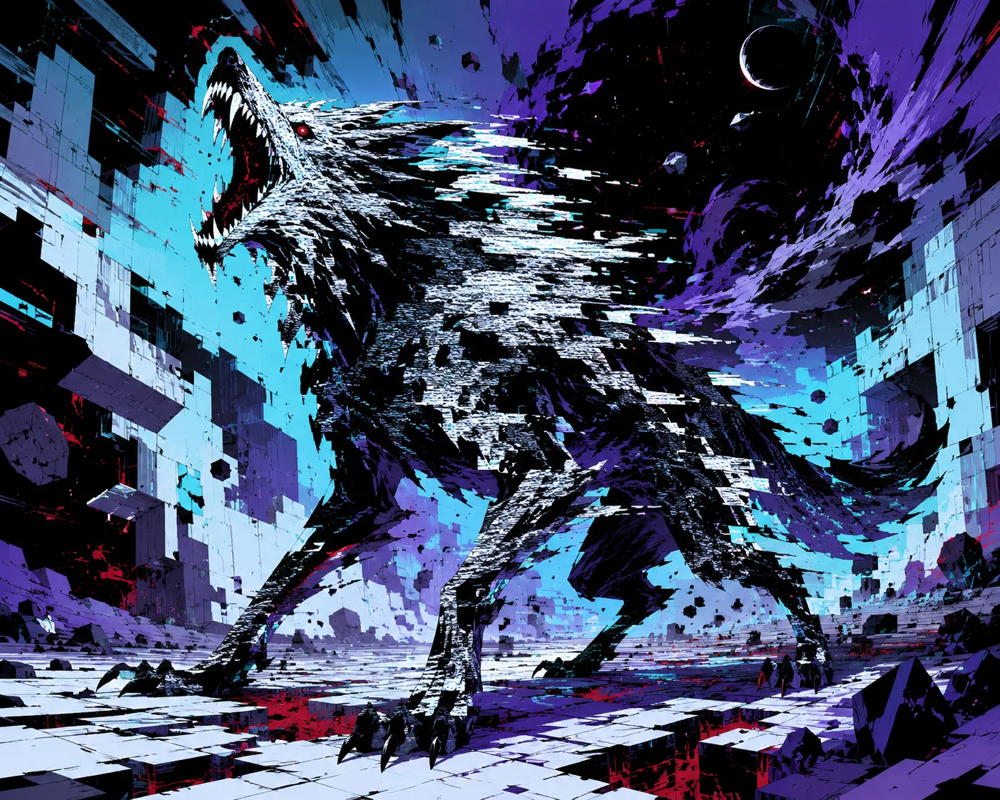

Stable Compendium record
foldhowl
Peripheral dossier / Drakken entity
Foldhowl
Glitch-touched phase-lupine
- Stable ID
foldhowl- Structural type
- character-section
- Canon status
- unknown
- Spoiler level
- major
Published source content
Canonical record
- Its body never finishes loading.
- Bends local space into failed geometry.
- Created the permanent “Hole in the Map” at Jaakar Keep, turning a military war room into an enduring spatial error.
Visual reference
